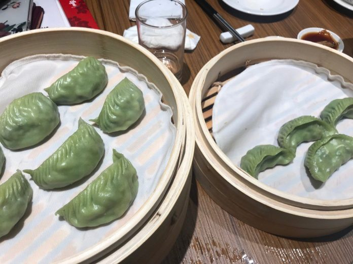

台灣知名餐飲業者鼎泰豐 12 月初在倫敦展店，鮮美多汁的小籠包立即擄獲口味刁鑽的倫敦人，據彭博資訊報導，
尖峰時刻甚至要排隊四、五個小時方可入座，人氣無法擋。
倫敦店是鼎泰豐將版圖擴展到歐洲的第一次嘗試，備受外界重視。 落址於倫敦柯芬園，採取地上一層、地下一層的兩層店面結構，並擁有透明櫥窗式廚房，可容納 250 名顧客。
開幕當天，英國前外相強森（Boris Johnson）也到現場支持，並親自體驗動手包鼎泰豐著名的 18 摺小籠包。
下一頁
第三頁
第四頁
第五頁